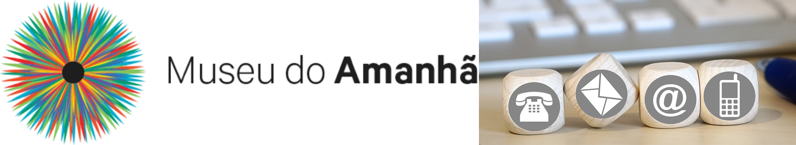

Contato
Para falar com o Museu:
contato@museudoamanha.org.br
Clique aqui para agendamento de visitas mediadas
Atendimento de segunda a sexta, das 10h às 17h, exceto feriados
Atividades do Laboratório:
laboratorio@museudoamanha.org.br
Atividades do Observatório:
observatorio@museudoamanha.org.br
Entre em contato com o museu !
Redes Sociais